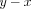
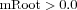
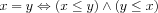

The Boolean trigger expression comprises numerical comparisons and Boolean operations. Thus specifying the compilation rules for root finders, which determine when the result of the numerical comparison changes from
false to
true, and Boolean operations suffices to express arbitrary trigger expression within in COPASI. A trigger expression causes an event to fire whenever its value changes from false to true.
Numerical Comparison
A Boolean trigger expression needs to be compiled into a root finding expression for each numerical comparison (2 for equality).
Root Finder
LSODAR uses a root finding algorithm which detects roots of odd order, i.e., the points where the root expression changes sign. An event is only triggered when the sign changes from negative to positive. Since we cannot calculate the slope of the root expression with respect to time we need to keep track whether the Boolean expression associated with the root finder currently evaluates to true or false. This values is only recalculated when the root expression changes sign. The root finder also needs to keep track whether the root is checked for equality or inequality. Additionally there exist 2 types of roots, those which may change only through other events, i.e., discretely, and those which also change during integration (deterministic or stochastic).
CRootFinder:
Attributes:
CExpression mRoot;
double * mpRootValue;
bool mEquality;
bool mDiscrete;
double mTrue;
The table below specifies how a comparison between two floating point numbers in a trigger expression is converted to a root finder. Whenever the expression evaluates to zero and we have a change of sign the fire expression is evaluated to determine whether the trigger fires and the root expression changes its state to inactive. If the trigger does not fire the charge expression is evaluated to determine whether the root finder's state has to be set to active.
Numerical Comparison| Comparison | mRoot | mEquality | initial mTrue |
| |  | true | |
| | | false |  |
| | | true | |
| | | false | |
Transforming the numerical comparison for inequality is trivial since , i.e., we have the Boolean operation NOT and the comparison for equality, which means we are left with specifying a suitable process of detection equality. We make use of the fact that , i.e., we are left with finding either of the roots of the right hand side and dealing with the Boolean operation AND.
Boolean Operations
Boolean Operations| Operation | True Expression |
| | |
| | |
| | |
| | |
| |  |
Other Issues
As long as the trigger expression is self contained the above suffices. However, it is possible in COPASI and SBML that the trigger expression makes use of other functions which complicates the issue as can be seen in the following example.